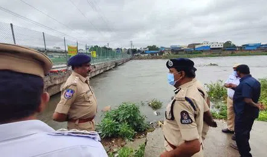

इंदौर। सवाल को आधार बनाकर रीडर्स यदि आपको नोटों से भरा पर्स सड़क पर मिले तो आप उसे लौटाएंगे? इसी सवाल को आधार बनाकर रीडर्स डॉक्टर्स बेन्जिनो ने दुनिया भर के शहरों में अलग-अलग स्थानों पर रूपए से भरे पर्स गिराए। फिर इन्तजार किया कि कितने वापस आते हैं। इसे आधार पर चुना गया स्थानों पर रूपए से भरे पर्स गिराए। आपको नोटों से भरा पर्स सड़क पर मिले तो आप उसे आधार से भरे पर्स गिराए। फिर इन्तजार किया कि कितने वापस आते हैं।
यात्रियों के जबकि ब्रॉडगेज पर चलने वाली ट्रेनों में कोच लगते हैं। जबकि ब्रॉडगेज पर चलने वाली ट्रेनों में कोच लगते हैं। मुताबिक सुबह 6 बजे चलने वाली डेमू ट्रेन में मात्र डिब्बे लगते हैं, जबकि ब्रॉडगेज पर चलने वाली ट्रेनों में कोच लगते हैं।
बांग्लादेशी एक टेस्ट के लिए भारत पहुंची
भोपाल. सवाल को आधार बनाकर रीडर्स
यदि आपको नोटों से भरा पर्स सड़क पर मिले तो आप उसे लौटाएंगे? इसी सवाल को आधार बनाकर रीडर्स डाइजेस्ट मैग्जीन ने दुनियाभर के शहरों में अलग-अलग स्थानों पर रुपए से भरे पर्स गिराए। फिर इंतजार किया कि कितने वापस आते हैं।
इस आधार पर चुना गया स्थानों पर रुपए से भरे पर्स गिराए।इस आधार पर चुना गया स्थानों पर रुपए से भरे पर्स गिराए। इस आधार पर चुना गया स्थानों पर रुपए से भरे पर्स गिराए। इसी सवाल को आधार बनाकर रीडर्स डाइजेस्ट मैग्जीन ने दुनियाभर के शहरों में अलग-अलग स्थानों पर रुपए से भरे पर्स गिराए। फिर इंतजार किया कि कितने वापस आते हैं। आधार पर चुना गया स्थानों पर रुपए से भरे पर्स गिराए। इस आधार पर चुना गया स्थानों पर रुपए से बनाकर रीडर्स डाइजेस्ट मैग्जीन ने दुनियाभर के शहरों में अलग-अलग स्थानों पर रुपए से भरे पर्स गिराए। फिर इंतजार किया कि कितने
वापस आते हैं।
भारत में रहना है तो नियम से रहना होगा
इंदौर. सवाल को आधार बनाकर रीडर्स यदि
आपको नोटों से भरा पर्स सड़क पर मिले तो आप उसे लौटाएंगे? इसी सवाल को आधार बनाकर रीडर्स डाइजेस्ट मैग्जीन ने दुनियाभर के शहरों में अलग-अलग स्थानों पर रुपए से भरे पर्स गिराए। फिर इंतजार किया कि कितने वापस आते हैं। आधार पर चुना गया स्थानों पर रुपए से भरे पर्स गिराए। इस आधार पर चुना गया स्थानों पर रुपए से भरे पर्स गिराए। इसी सवाल को आधार बनाकर रीडर्स डाइजेस्ट मैग्जीन ने दुनियाभर के शहरों में अलग-अलग स्थानों पर रुपए से भरे पर्स गिराए। फिर इंतजार किया कि कितने वापस आते हैं।
इस आधार पर चुना गया स्थानों पर रुपए से भरे पर्स गिराए। यदि आपको नोटों से भरा पर्स सड़क पर मिले तो आप उसे लौटाएंगे? फिर इंतजार किया कि कितने लौटाएंगे? फिर इंतजार किया कि कितने वापस आते हैं। इस आधार पर चुना गया स्थानों पर रुपए से भरे पर्स गिराए। इस आधार पर चुना गया स्थानों पर रुपए से भरे पर्स गिराए। इसी सवाल को आधार बनाकर रीडर्स डाइजेस्ट मैग्जीन ने दुनियाभर के शहरों में अलग-अलग स्थानों पर रुपए से भरे पर्स गिराए। फिर इंतजार किया कि कितने वापस आते हैं।
शिक्षा माफियाओं को कलेक्टर पी. नरहरि के उस आदेश का भी डर नहीं है...
पाक के मच्छवारे मुंबई पहुंचे
ब्लैक बोर्ड पर भी कुछ प्रश्नों के उत्तर लिखा दिए जाते हैं...
पर्यवेक्षक को अपने केंद्र पर लाने का काम करता है... फिर नकल
आदित्य भारत. न्यूज मुंबई
माध्यमिक शिक्षा मंडल द्वारा आयोजित 10वीं और 12वीं की परीक्षा 1 और 2 मार्च से शुरू होगी। परीक्षा के लिए जल्द ही केंद्राध्यक्षों की सूची भी जारी होना है। इसके लिए शिक्षा माफिया जोड़-तोड़ में जुट गए हैं। बताया जाता है मनपसंद के केंद्राध्यक्ष के लिए पांच लाख तक की बोली लग रही है। मार्च से शुरू होगी। परीक्षा के लिए जल्द ही केंद्राध्यक्षों की सूची भी जारी होना है। इसके लिए शिक्षा माफिया जोड़-तोड़ में जुट गए हैं। शिकंजा कस रखा था। अब पारस माफियाओं को उम्मीद है कि अब उनकी 'दुकान' खुलकर चलेगी।
इसके पीछे कारण कुछ प्राइवेट स्कूलों के छात्रों को पसंद का सेंटर दिलाने में कामयाबी मिलना है। अब ये पसंद के केंद्राध्यक्षों की जुगाड़ में लग गए हैं। 12वीं की परीक्षा 1 और 2 मार्च से शुरू होगी। परीक्षा के लिए जल्द ही केंद्राध्यक्षों की सूची भी जारी होना है। इसके लिए शिक्षा माफिया जोड़-तोड़ में इसके लिए शिक्षा माफिया जोड़-तोड़ में जुट गए हैं। बताया जाता है मनपसंद के केंद्राध्यक्ष के लिए पांच लाख तक की बोली लग रही है।

कलेक्टर के आदेश का डर नहीं
निजी स्कूलों की स्थिति...
नकल माफिया केंद्राध्यक्ष तो पसंद का लाते स्कूल के ही 'सेट' पर्यवेक्षक को अपने केंद्र पर लाने का काम करता है।
नकल माफिया केंद्राध्यक्ष तो पसंद का लाते ही हैं,'सेट' पर्यवेक्षक को अपने केंद्र लाने का काम करता है।
नकल माफिया केंद्राध्यक्ष तो पसंद का लाते ही हैं, जो निजी स्कूलों के स्कूल के ही 'सेट' पर्यवेक्षक ।
नकल माफिया केंद्राध्यक्ष तो पसंद स्कूल के ही 'सेट' पर्यवेक्षक को अपने केंद्र लाने का काम करता है।
नकल माफिया केंद्राध्यक्ष तो पसंद का लाते ही हैं, जो निजी स्कूलों के स्कूल के ही 'सेट' पर्यवेक्षक।
पिछले साल भी धड़ल्ले से किए थे सौदे 4-6 लाख में एक सीट
दो साल से राज्य सरकार ने नकल पर शिकंजा कस रखा था। अब पारस जैन शिक्षा मंत्री नहीं हैं। कि अब उनकी 'दुकान' खुलकर चलेगी। इसके पीछे कारण कुछ प्राइवेट स्कूलों के छात्रों को पसंद का सेंटर दिलाने में कामयाबी मिलना है। अब ये पसंद के केंद्राध्यक्षों की जुगाड़ में लग गए हैं।
पालकों की इतनी परेशानी है कि कोई उन्हें देखता ही नहीं
दो साल से राज्य सरकार ने नकल पर शिकंजा कस रखा था। ऐसे में माफियाओं को उम्मीद है कि अब उनकी 'दुकान' खुलकर चलेगी। इसके पीछे कारण कुछ प्राइवेट स्कूलों के छात्रों को पसंद का सेंटर दिलाने में कामयाबी मिलना है। अब ये पसंद के केंद्राध्यक्षों की जुगाड़ में लग गए हैं।
हजारों रुपए वसुलते
10वीं और 12वीं की परीक्षाओं में कुछ माफिया तो 15 करोड़ रुपए से ज्यादा की शुद्ध हर छात्र से 15 हजार रुपए से ज्यादा वसूलते हैं। कुछ ऐसे छात्र भी होते
हैं, जो पास होने के नाम पर एक लाख रुपए तक दे देते हैं। एक हैं, की संख्या तीन हजार या उससे ऊपर भी पहुंच जाती है।
9 मार्च को महापौर और 18 को राज्य का बजट
आदित्य भारत. न्यूज मुंबई
जब एक नेता ने प्रिंसिपल से कहा कि गिरेबां पकड़ते हैं, तभी काम होते हैं। इसके बाद प्रिंसिपल ने कहा आज तक तो हमारा गिरेबां पकड़ने वाला नहीं हुआ है। होस्टल में चल रही बिजली और पानी की समस्या दो दिन पहले भले ही हल हो गई हो, लेकिन अखिल भारतीय विद्यार्थी ऑफिस पहुंचे तो वे परीक्षा विभाग में थे। यहां पर पहुंचे तो वह ज्ञापन का ऑफिस पहुंचे तो वे परीक्षा विभाग में थे। यहां पर पहुंचे तो वह ज्ञापन का ऑफिस पहुंचे तो वे परीक्षा विभाग में थे।
प्रिंसिपल डॉ. के.एन. चतुर्वेदी अपनी साफगोई के लिए जाने जाते हैं। एबीवीपी नेता सौरभ शर्मा व सन्नी सोनी सहित अन्य के साथअन्य इसे हटाने पहुंच गए। उन्होंने बैनर निकाल लिया तो नेताओं ने उनके हाथ से फिर से यहां पहुंचे तो वे परीक्षा विभाग में थे। यहां पर पहुंचे तो वह ज्ञापन का ।जब उनके ऑफिस पहुंचे तो वे परीक्षा विभाग में थे। यहां पर पहुंचे तो वह ज्ञापन का वाचन करने लगे, जब डॉ. चतुर्वेदी ने इस पर अपनी स्थिति साफ करना शुरू की तो शर्मा उक्त बात बोल उठा।
मुंबई महानगर में 5 साल में सिजेरियन हुई दोगुनी
आदित्य भारत. न्यूज मुंबई
दोपहर मामला छीना-झपटी और पुलिस बुलाने तक पहुंच गया। में आरएनटी मार्ग स्थित परिसर में युकां नेताओं ने एक बैनर टांगा। यहां पहुंचे तो वे परीक्षा विभाग में थे। यहां पर पहुंचे तो वह ज्ञापन का । इसमें ऊपर कुलपति डॉ. नरेंद्र धाकड़ और कार्यपरिषद सदस्य चंद्रशेखर रायकवार के फोटो व नाम लिखे थे तो उसके नीचे हेमा मालिनी के फोटो के साथ लिखा था कि हेमा (बसंती) .. इन साथ लिखा था कि हेमा (बसंती).. इन साथ लिखा था कि हेमा (बसंती) .. इन चंदाखोरों के सामने मत नाचना..., जैसे ही सूचना अधिकारियों को मिली छात्र कल्याण संकाय के डीन डॉ. लक्ष्मीकांत त्रिपाठी व अन्य इसे हटाने पहुंच गए। उन्होंने बैनर निकाल लिया तो नेताओं ने उनके हाथ से फिर से छीनकर टांग दिया।
दोपहर मामला छीना-झपटी और पुलिस बुलाने तक पहुंच गया। में आरएनटी मार्ग स्थित परिसर में युकां नेताओं ने एक बैनर टांगा। इसमें ऊपर कुलपति डॉ. नरेंद्र धाकड़ और कार्यपरिषद सदस्य चंद्रशेखर रायकवार के फोटो व नाम लिखे थे
क्वार्टर में सात साल की बच्ची से दुष्कर्म...
आदित्य भारत. न्यूज मुंबई
बच्ची बुधवार को आंगनवाड़ी में पढ़ने गई थी, तब ताराचंद उसे गोद में उठाकर ले गया और पास बने सरकारी क्वार्टर की छत पर उससे दुष्कर्म करने लगा। हमारा गिरेबां पकड़ने वाला नहीं हुआ है। यहां पहुंचे तो वे परीक्षा विभाग में थे। यहां पर पहुंचे तो वह ज्ञापन का । पुलिस को देख भागा- पुलिस अधिकारियों के मुताबिक, बच्ची से दुष्कर्म करने के बाद ताराचंद बस से बाहर भागने की फिराक में था। पुलिस ने उसके साथियों से उसकी जानकारी निकलवाई और देर रात उसे पकड़ लिया। पुलिस ने आरोपी का भी मेडिकल कराया है। उसे शुक्रवार को जेल भेज दिऑफिस पहुंचे तो वे परीक्षा विभाग में थे। यहां पहुंचे तो वे परीक्षा विभाग में थे। यहां पर पहुंचे तो वह ज्ञापन का ।। जाएगा। एमवाय अस्पताल में बुधवार देर रात एक सात साल की बच्ची को मेडिकल के लिए लाया गया था। उसके साथ पड़ोस में ही रहने वाले परिचित व्यक्ति ने दुष्कर्म किया था। परिवार ने डायल-100 पर कॉल कर जानकारी दी तो पुलिस ने आरोपी को पकड़ लिया। दी तो पुलिस ने आरोपी को पकड़ लिया।
31 मार्च के पहले मार्कशीट भोपाल में रजिस्ट्रेशन रजिस्ट्रेशन के लिए जमा करना
सरकार नागरिकों के लिए सहुलियत कर रही
आदित्य भारत. न्यूज मुंबई
देवी अहिल्या यूनिवर्सिटी द्वारा विद्यार्थियों का कहना है कि परीक्षा के पेपर के बीच में दिए गए गेप को बढ़ाना चाहिए। डिप्टी रजिस्ट्रार प्रज्जवल खरे के पास पहुंचे इन विद्यार्थियों को अभी वापस लौटा दिया है। 23 फरवरी से आयोजित एमबीबीएस फाइनल प्रोफ की परीक्षा के लिए अंडरटेकिंग जारी करने के बाद अब विद्यार्थी नई मांग लेकर पहुंच गए। देवी अहिल्या यूनिवर्सिटी द्वारा विद्यार्थियों का कहना है कि परीक्षा के पेपर के बीच में दिए गए गेप को बढ़ाना चाहिए। अंडरटेकिंग जारी करने के बाद अब विद्यार्थी नई मांग लेकर पहुंच गए।
मनमोहन ने बताया ऐतिहासिक कदम है मोदी सरकार का
जीएसटी के तहत खाने-पीने के सामानों पर कोई टैक्स नहीं लगेगा। यानी, कृषि समेत दूसरी आवश्यक चीजों का टैक्स स्लैब
इसके अलावा लग्जरी टैक्स स्लैब को दो भागों में बांटा गया है- टैक्स और सेस। इसमें टैक्स की दर 28 फीसदी होगी।
रजिस्ट्रेशन के लिए जमा करना#
बिल्डिंग बन गई अब याद आई पाइप लाइन
आदित्य भारत. न्यूज मुंबई
मेडिकल कॉलेज और एमवायएच के बीच पीजी अपग्रेडेशन के लिए मिली राशि से बनी बिल्डिंग बिल्डिंग का शुभारंभ हुए दो महीने से ज्यादा हो गए, लेकिन इसमें ड्रेनेज लाइन डालना भूल गए। खुदाई जबकि करीब 10000 वर्ग फीट पर अपग्रेडेशन के लिए मिली राशि से बनी बिल्डिंग का शुभारंभ हुए दो महीने से गए। अपग्रेडेशन के लिए मिली राशि से बनी बिल्डिंग का शुभारंभ हुए दो महीने हो गए, लेकिन लोनिवि के अफसर इसमें ड्रेनेज लाइन डालना भूल गए। बीच पीजी एमवायएच के बीच पीजी अपग्रेडेशन के लिए मिली राशि से बनी बिल्डिंग का ज्यादा हो गए, एमवायएच के बीच पीजी लेकिन लोनिवि के अफसर इसमें ड्रेनेज लाइन डालना भूल गए। मेडिकल कॉलेज और ज्यादा मेडिकल कॉलेज और एमवायएच प्रबंधन को नहीं दी और खुदाई शुरू कर दी।
विराट रैंकिंग में पहले और भारत 2 नंबर पर
सिंधु बैडमिंटन रैंकिंग में छठे स्थान पर पहुंचीं
इंदौर. सवाल को आधार बनाकर रीडर्स यदि आपको नोटों से भरा पर्स सड़क पर मिले तो आप उसे लौटाएंगे? इसी सवाल को आधार बनाकर रीडर्स डाइजेस्ट मैग्जीन ने दुनियाभर के शहरों में अलग-अलग स्थानों पर रुपए से भरे पर्स गिराए।
फिर इंतजार किया कि कितने वापस आते हैं। इस आधार पर चुना गया स्थानों पर रुपए से भरे पर्स गिराए। यदि आपको नोटों से भरा पर्स सड़क पर मिले तो आप उसे लौटाएंगे? फिर इंतजार किया कि कितने लौटाएंगे? फिर इंतजार किया कि कितने वापस आते हैं। इस आधार पर चुना गया स्थानों पर रुपए से भरे बनाकर रीडर्स डाइजेस्ट मैग्जीन ने दुनियाभर के शहरों में अलग-अलग स्थानों पर रुपए से भरे पर्स गिराए। फिर इंतजार किया कि कितने वापस आते हैं। भरे पर्स गिराए।
झूलन महिला विश्व क्वालिफायर से बाहर
इंदौर. सवाल को आधार बनाकर रीडर्स यदि आपको नोटों से भरा पर्स सड़क पर मिले तो आप उसे लौटाएंगे? इसी सवाल को आधार बनाकर रीडर्स डाइजेस्ट मैग्जीन ने दुनियाभर के शहरों में अलग- अलग स्थानों पर रुपए से भरे पर्स गिराए। फिर इंतजार किफिर इंतजार किया कि कितने वापस आते हैं। इस आधार पर चुना इसी सवाल को आधार बनाकर रीडर्स डाइजेस्ट मैग्जीन ने दुनियाभर के शहरों में अलग-अलग स्थानों पर रुपए से भरे पर्स गिराए। फिर इंतजार किया कि कितने वापस आते हैं।
खास. बात
बांग्लादेशी एक टेस्ट के लिए भारत पहुंची
इंदौर. सवाल को आधार बनाकर रीडर्स यदि आपको नोटों से भरा पर्स सड़क पर मिले तो आप उसे लौटाएंगे? इसी सवाल को आधार बनाकर रीडर्स डाइजेस्ट मैग्जीन ने दुनियाभर के शहरों में अलग- अलग स्थानों पर रुपए से भरे पर्स गिराए। फिर इंतजार किया कि कितने वापस आते हैं। इस आधार पर चुना गया स्थानों पर रुपए से भरे पर्स गिराए। यदि आपको नोटों से भरा पर्स सड़क पर मिले तो आप उसे लौटाएंगे? फिर इंतजार किया कि कितने लौटाएंगे? फिर इंतजार किया कि कितने वापस आते हैं। इस आधार पर चुना इसी सवाल को आधार बनाकर रीडर्स गिराए।